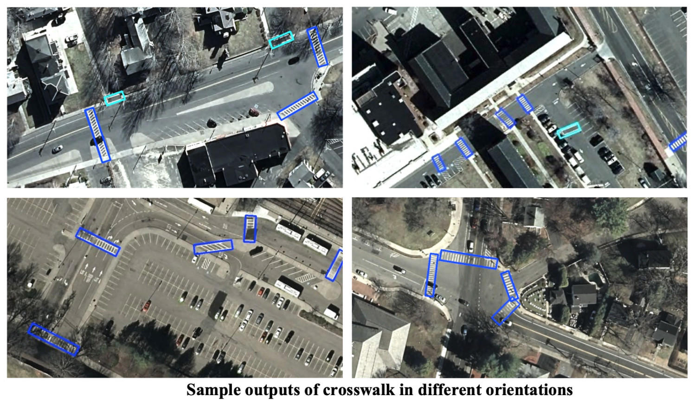

CrosswalkNet: A Deep Learning Framework for Pedestrian Crosswalk Detection
Links
CrosswalkNet is a deep learning framework optimized for detecting crosswalks in aerial images across over 10,000 square miles. It utilizes high-resolution aerial imagery from MassGIS captured with an UltraCam Eagle M3 camera.
Technical Details
- Deep learning-based crosswalk detection
- High-resolution aerial imagery processing
- Large-scale deployment (10,000+ square miles)
- UltraCam Eagle M3 camera integration
- MassGIS data utilization